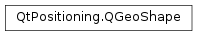

QGeoShape¶
Inherited by: QGeoCircle, QGeoPath, QGeoPolygon, QGeoRectangle
Synopsis¶
Detailed Description¶
The
PySide2.QtPositioning.QGeoShapeclass defines a geographic area.This class is the base class for classes which specify a geographic area.
For the sake of consistency, subclasses should describe the specific details of the associated areas in terms of
PySide2.QtPositioning.QGeoCoordinateinstances and distances in meters.This class is a
Q_GADGET()since Qt 5.5. It can be directly used from C++ and QML .
-
class
PySide2.QtPositioning.QGeoShape¶ -
class
PySide2.QtPositioning.QGeoShape(other) Parameters: other – PySide2.QtPositioning.QGeoShapeConstructs a new invalid geo shape of
UnknownType.Constructs a new geo shape which is a copy of
other.
-
PySide2.QtPositioning.QGeoShape.ShapeType¶ Describes the type of the shape.
Constant Description QGeoShape.UnknownType A shape of unknown type QGeoShape.RectangleType A rectangular shape QGeoShape.CircleType A circular shape QGeoShape.PathType A path type QGeoShape.PolygonType A polygon type
-
PySide2.QtPositioning.QGeoShape.boundingGeoRectangle()¶ Return type: PySide2.QtPositioning.QGeoRectangleReturns a
PySide2.QtPositioning.QGeoRectanglerepresenting the geographical bounding rectangle of the geo shape, that defines the latitudinal/longitudinal bounds of the geo shape.
-
PySide2.QtPositioning.QGeoShape.center()¶ Return type: PySide2.QtPositioning.QGeoCoordinateReturns the coordinate located at the geometric center of the geo shape.
-
PySide2.QtPositioning.QGeoShape.contains(coordinate)¶ Parameters: coordinate – PySide2.QtPositioning.QGeoCoordinateReturn type: PySide2.QtCore.boolReturns whether the coordinate
coordinateis contained within this geo shape.
-
PySide2.QtPositioning.QGeoShape.extendShape(coordinate)¶ Parameters: coordinate – PySide2.QtPositioning.QGeoCoordinateThis method used to extend the geo shape to also cover the coordinate
coordinate.It currently only works for
PySide2.QtPositioning.QGeoCircleandPySide2.QtPositioning.QGeoRectangle, on which the functionality remains, now also accessible throughQGeoCircle.extendCircleandQGeoRectangle.extendRectangle.This method should therefore not be called on a generic
PySide2.QtPositioning.QGeoShapeany longer, as the behavior for other shape types is undefined.
-
PySide2.QtPositioning.QGeoShape.isEmpty()¶ Return type: PySide2.QtCore.boolReturns whether this geo shape is empty.
An empty geo shape is a region which has a geometrical area of 0.
-
PySide2.QtPositioning.QGeoShape.isValid()¶ Return type: PySide2.QtCore.boolReturns whether this geo shape is valid.
-
PySide2.QtPositioning.QGeoShape.__ne__(other)¶ Parameters: other – PySide2.QtPositioning.QGeoShapeReturn type: PySide2.QtCore.boolReturns true if the
othergeo shape is not equivalent to this geo shape, otherwise returns false.
-
PySide2.QtPositioning.QGeoShape.__eq__(other)¶ Parameters: other – PySide2.QtPositioning.QGeoShapeReturn type: PySide2.QtCore.boolReturns true if the
othergeo shape is equivalent to this geo shape, otherwise returns false.
-
PySide2.QtPositioning.QGeoShape.toString()¶ Return type: unicode Returns a string representation of this geo shape.
-
PySide2.QtPositioning.QGeoShape.type()¶ Return type: PySide2.QtPositioning.QGeoShape.ShapeTypeReturns the type of this geo shape.
© 2018 The Qt Company Ltd. Documentation contributions included herein are the copyrights of their respective owners. The documentation provided herein is licensed under the terms of the GNU Free Documentation License version 1.3 as published by the Free Software Foundation. Qt and respective logos are trademarks of The Qt Company Ltd. in Finland and/or other countries worldwide. All other trademarks are property of their respective owners.